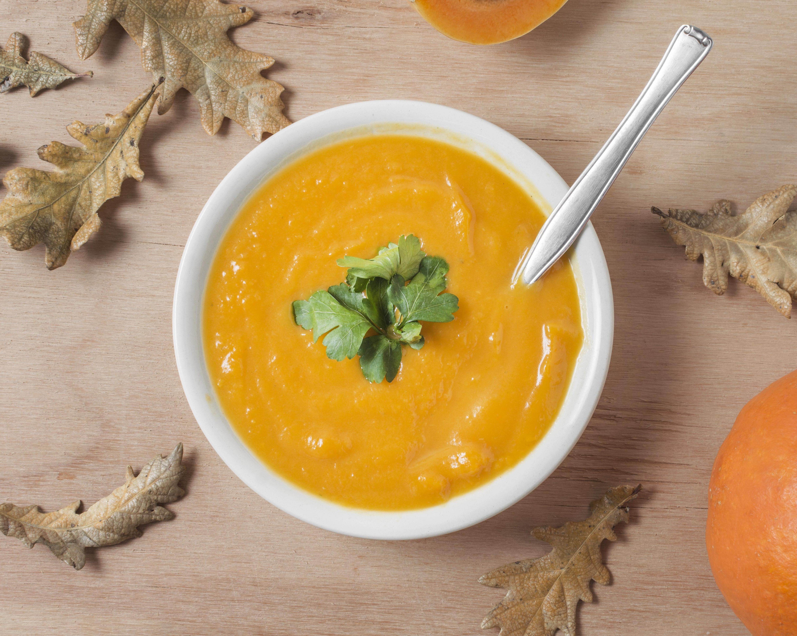

Procurando pratos frescos e deliciosos? Prepare um em menos de 30 minutos.

Receitas feitas por Chefs
Chef Rafaela Mota
Apaixonada por transformar a alimentação em uma experiência deliciosa e nutritiva.
Ver ReceitaExemplo do chef José
Oi, eu sou o José
Um entusiasta da culinária saudável, levei a ideia de criar um portal inovador de receitas saudáveis, oferecendo dicas e inspirações para uma vida equilibrada e nutritiva.
Macarrão Verde feito por José
Nutritivo e leve, com espinafre, abobrinha e molho de iogurte, cheio de sabor e frescor.